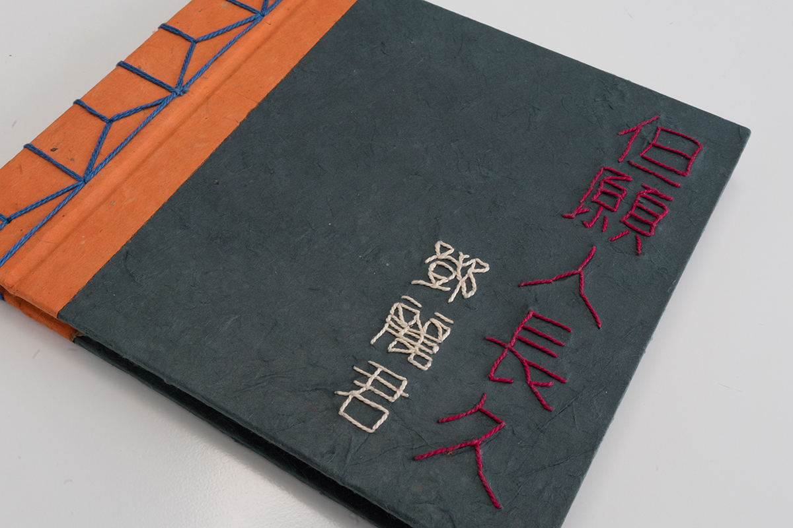

5" x 8" Stitch-Binded Book | Adobe InDesign
This typography book consists of 40 cover designs based on Chinese singer Teresa Teng (邓丽君)'s May We be Blessed with Longevity (但愿人长久). Each design uses the year, the name of the song, artist and album as the only text source. After all designs have been completed, they are put together using a Chinese-style stitch binding method.

Rather than completing an assignment, making this series of designs felt more like writing a song to myself. This book embodies my hopes to bring back the part of the culture that I lost when I moved to America. The Chinese characters in this book played an important role in this process. A language speaks for its culture. China, where I was born and raised, has a beautiful writing system that presents our culture in a lyrical way.
Teresa Teng’s album Faded Feelings used an unconventional practice by choosing poems from the Tang and Song Dynasties as the lyrics. Teng’s effort to re-shine light on traditional poetry and diction is remarkable as an act of culture preservation.
Moreover, Teng’s songs make me think of my grandma, who often hummed her songs when I was little. Teresa Teng was a pop singer of my grandma’s and parents’ generation. She was such an influential figure that every Chinese knows of her songs even nowadays. Her voice brings me a sense of familiarity and nostalgia. Listening to it again many years later, I also feel very different about it. I’ve moved further away from my parents’ shelter and experienced the goods and bads of life. This song, “May We be Blessed with Longevity” has a mixture of different emotions that resonates with me. Therefore, I made this book with the hope that my designs carry the feelings of the poet, Teresa Teng, and myself.
[Chapter Divider]
[Album Design]
[Punctuation Design]
[Colored Design]